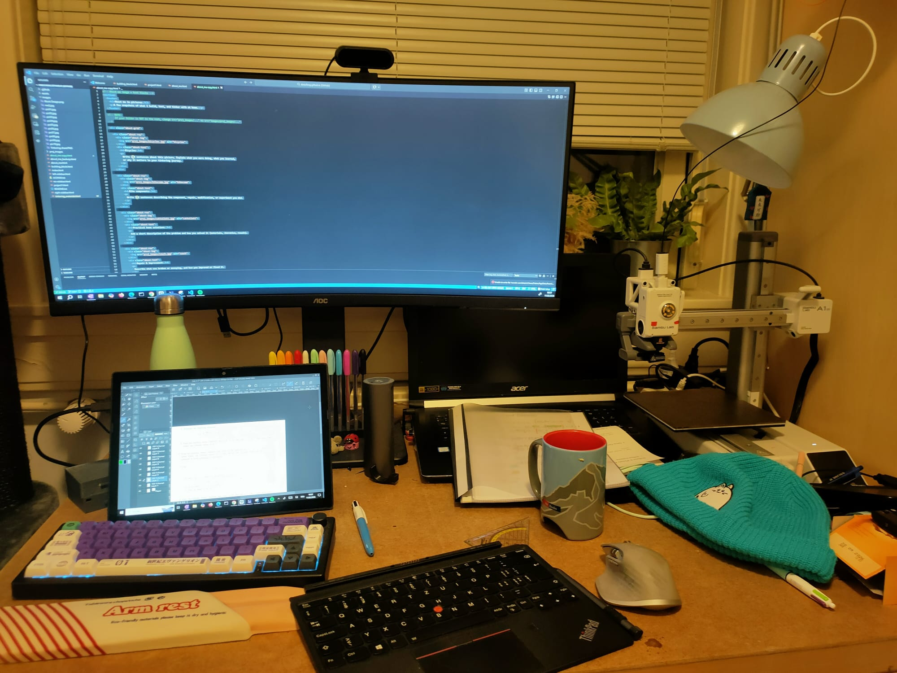
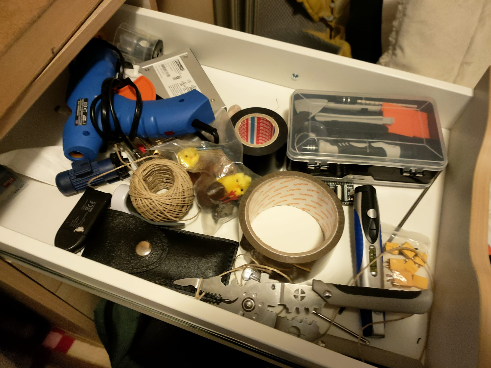
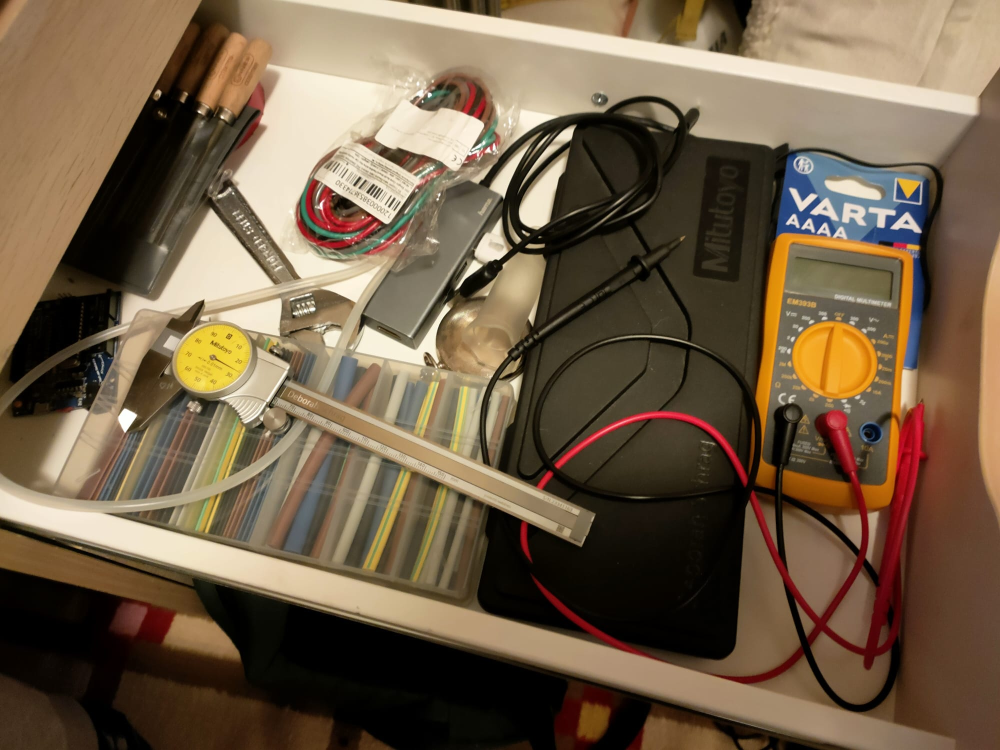
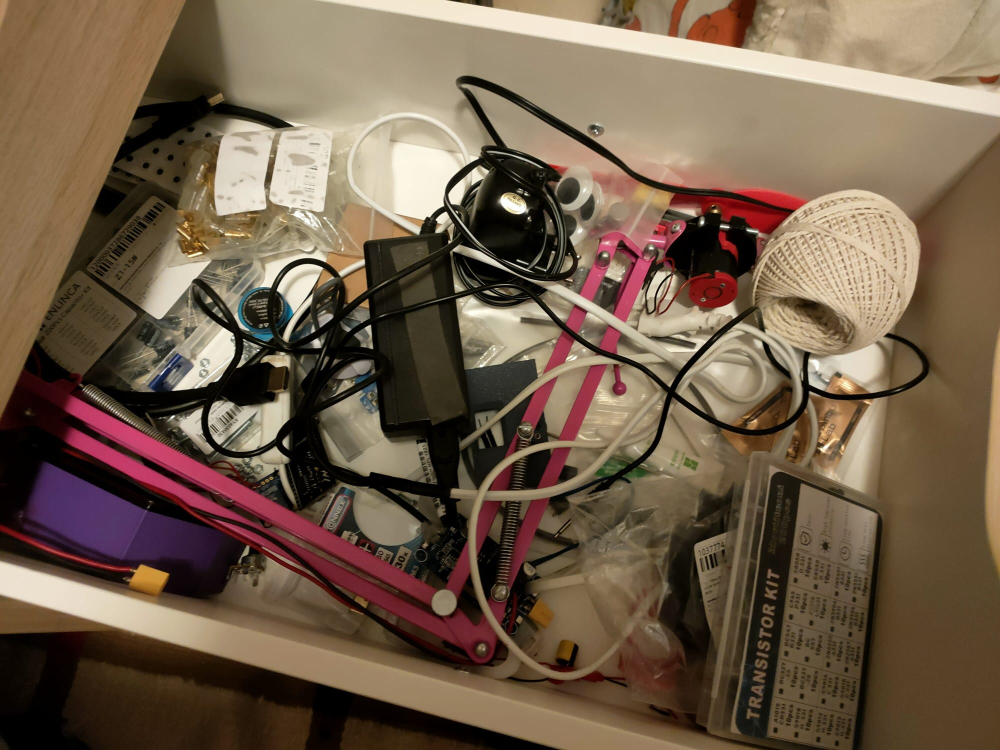
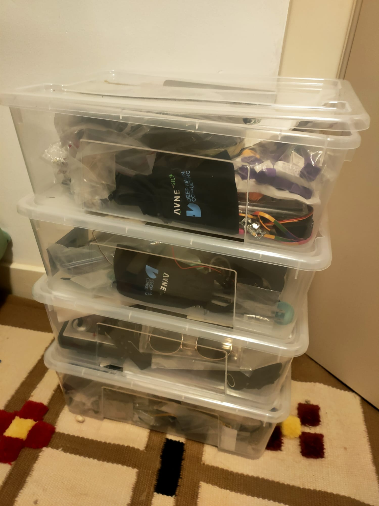

Tinkering space

My Table
As so many others my tinkering space is my table, at least for the small scale stuff. I got my smoll 3D printer here my mechanical keyboard (switches have been harvested out of an electronics bin at my old university, why someone would ever throw that away is beyond me). I like to have a widescreen monitor to work on my code and my computer on the bottom for drawing or anything else. I would like to have more space but my office space is limites. But I make do.

Drawer system
I have some unorganized drawers with some small stuff in it. Like a hot glue gun, tape, screwdriver set, electronics pliers.

Drawer 2
Goe some measuring tool in here, but the star of the show is my Mitutoyo dial caliper, if my office would burn to the ground and I could only take something it would be this dial caliper. I got it after fnishing my bachelor degree. Means a ton to me.

Drawer system 3
Got some condensators, transistors, and powersupply stuff in there and yarn, because you can never have enough yarn, or so.

Storage
So far I have accumulated 3 boxxes of various parts and garbade to tinker with, most is electronic stuff but also tubes, valves etc can be found in it.
Reflection on my Tinkering Space
Looking at my space now with the criteria from the course, I can see that it already supports tinkering in some ways, but also has some limitations.
Low Floor
I think my setup has a pretty low entry level. Most tools are easy to access and I can quickly start working on something. For example, I can just sit down at my table and start coding or printing something without much setup. At the same time, some things are a bit hidden in drawers, which sometimes slows me down.
Wide Walls
I would say my space has wide walls, because I have many different materials. There is electronics, mechanical parts, yarn, tools and random stuff. This allows me to work on very different kinds of projects, not just one type. So I can switch between coding, electronics or building something physical.
High Ceiling
The space also allows more complex projects, especially with the 3D printer and electronics. I can go quite far if I want to. However, the limited space sometimes becomes a problem when projects get bigger.
Organization
One thing that is clearly missing is good organization. A lot of things are just in drawers or boxes, and I don’t always know where everything is. This makes it harder to work efficiently and sometimes interrupts the flow.
Accessibility & Inspiration
Some tools are easy to reach, but others are not very visible. From the course I learned that visibility is important, because it can inspire new ideas. Right now, my space is more functional than inspiring.
What is missing
I think what is missing most is space and better structure. More surface area would help for bigger projects, and better organization would make it easier to start and continue working. Also, having materials more visible would probably lead to more spontaneous ideas.
Conclusion
Overall my tinkering space works, and I can do a lot with it, but it could be improved by making things more organized, more visible, and giving myself more room to work. Also having a shit ton of cash would also change things alot.